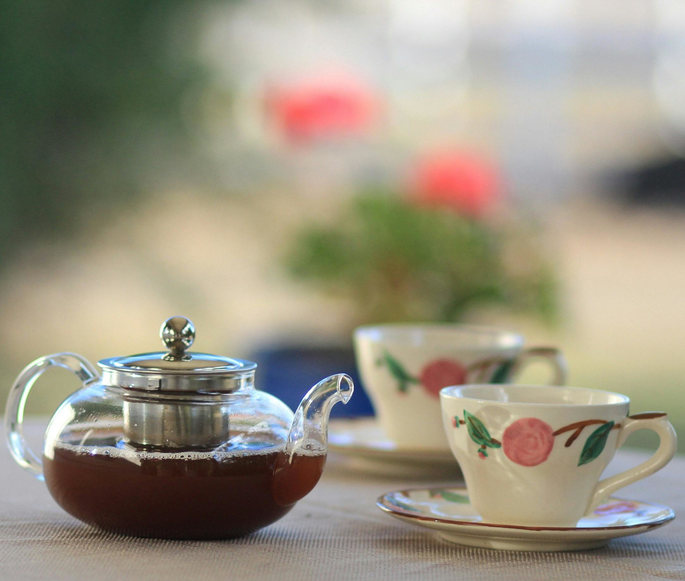
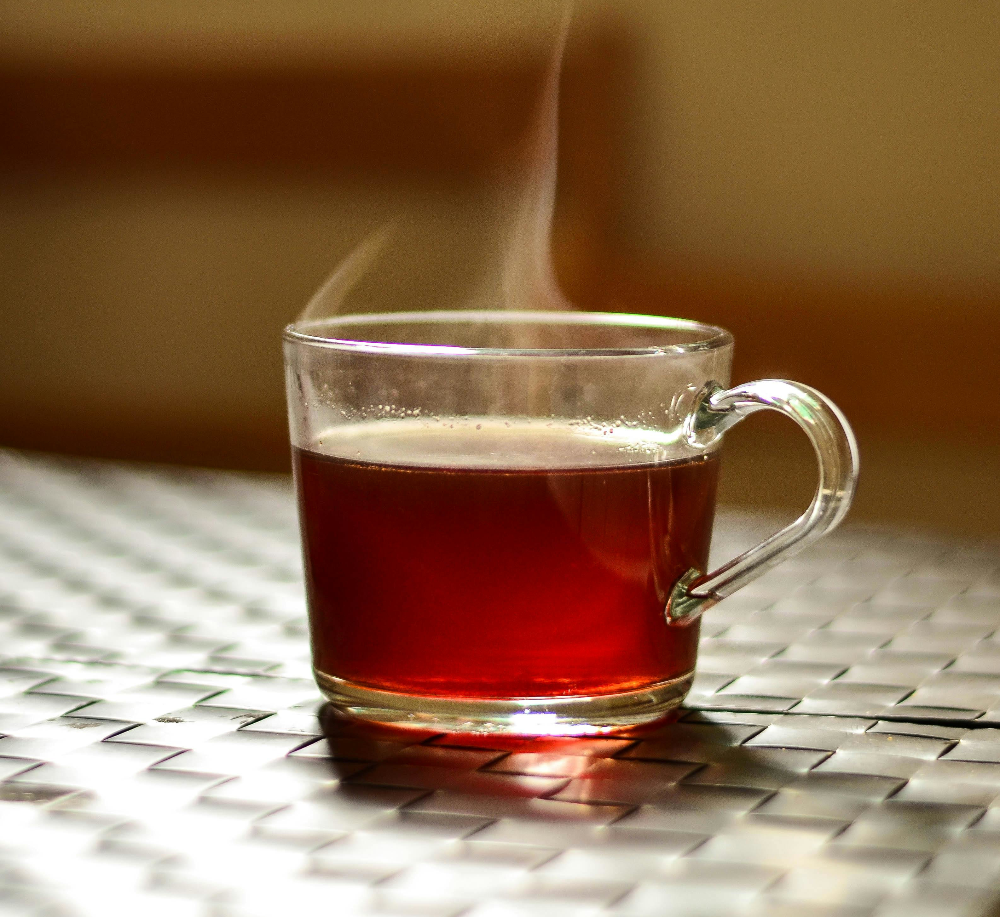
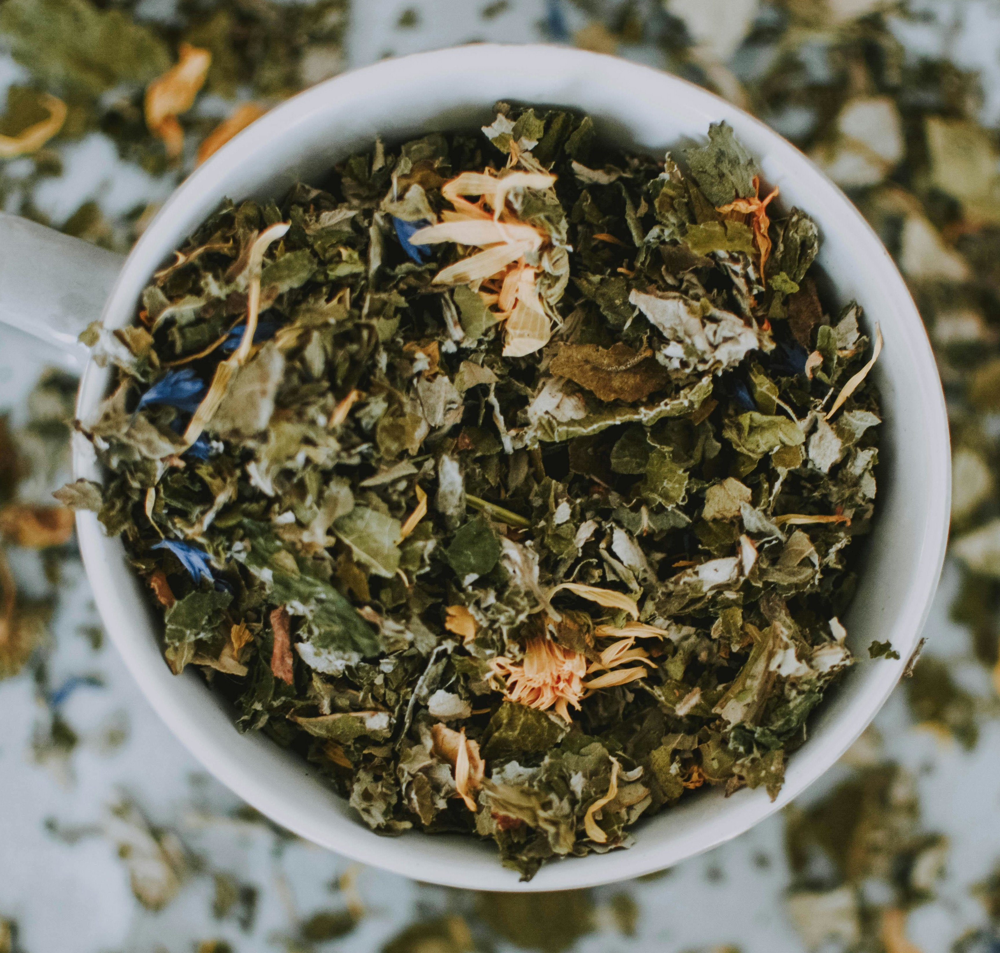
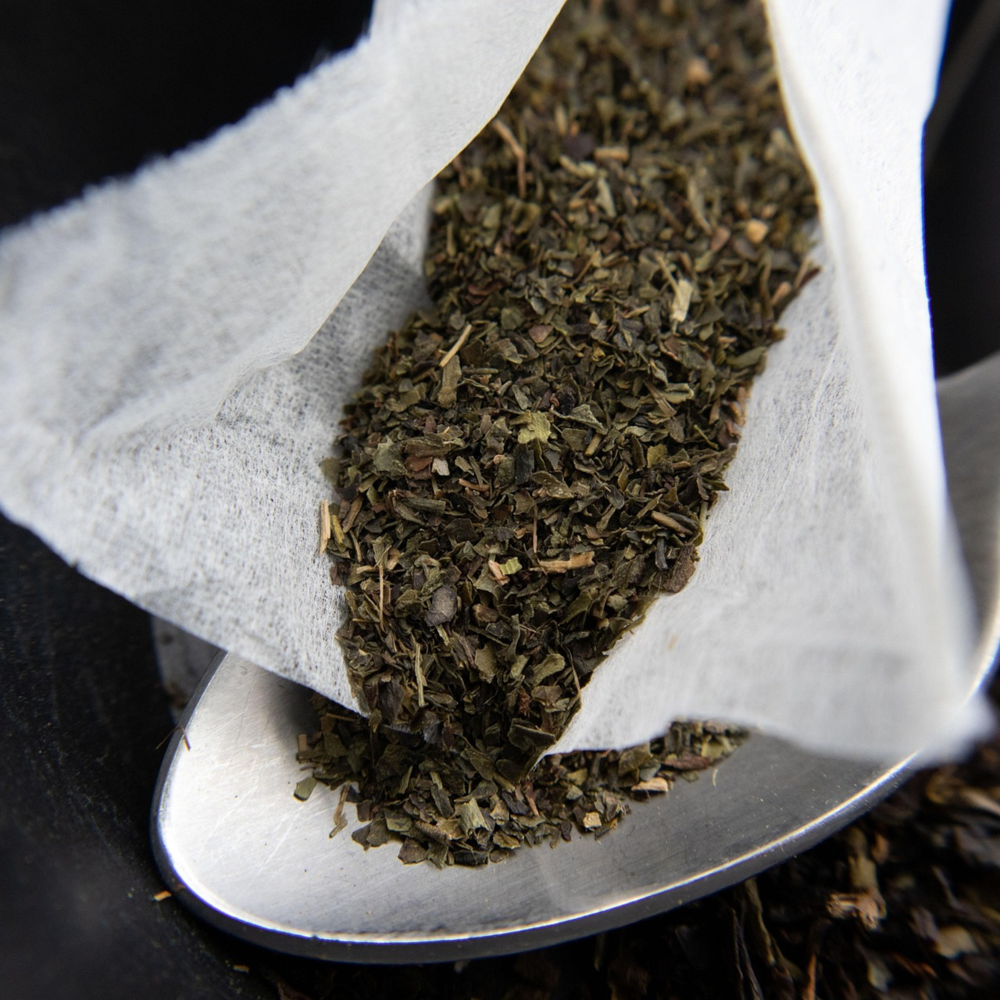
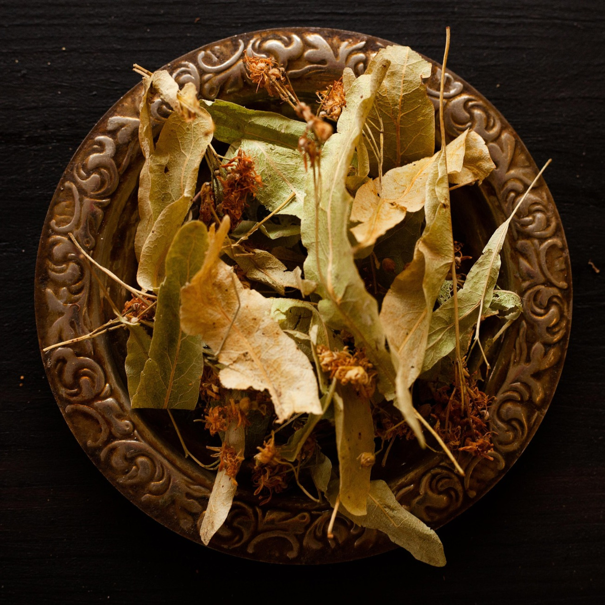
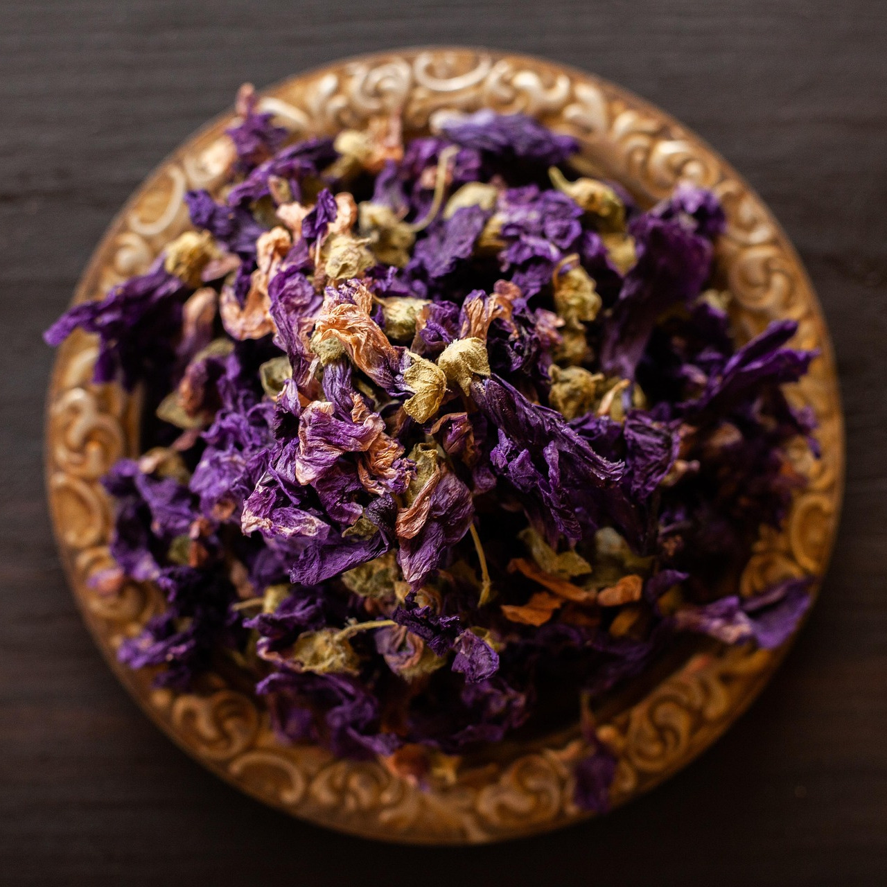
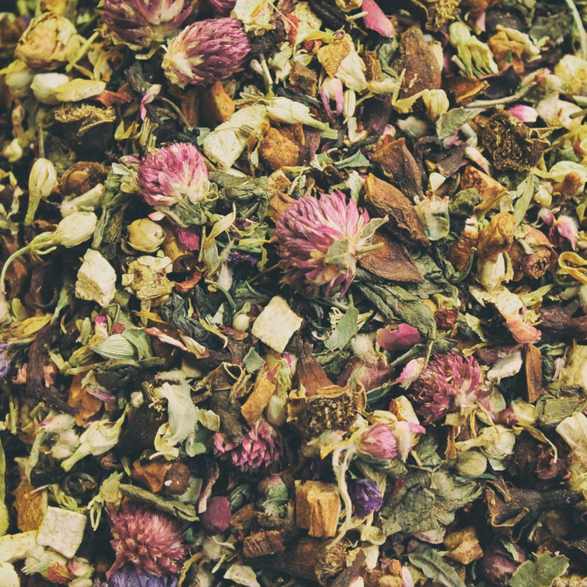

Vă mulțumim că ne vizitați acest colț virtual al magazinului nostru! La ceainăria
noastră găsiți cele mai fresh sortimente de ceai de calitate!
Ceai Negru
Ceai Verde
Ceai Alb
Ceai de Fructe
Ceainic
Sortimentele noastre sunt disponibile atat in magazin cat si prin livrare la
domiciliul dumneavoastra!
O ceașcă de ceai te poate însoți în momentele intime ale zilei, fie dimineața
sau seara.
Promoții și oferte
Super ofertă de weekend
Camellie's Corner oferă reduceri de 10% 15% pentru toate
produsele cumpărate în intervalul 10-14.
Oferta este valabilă doar în zilele de sâmbătă și duminică la sediile CC.
în cazul în care cumpărați mai mult de 500 de grame de ceai primiți si un card de
fidelitate
pentru Salvare!
Ofertă pachet
Camellie's Corner oferă pachete cuprinzând:
Winter Starter Kit
Un set de 3 sortimente de ceaiuri artizanale
Oferta 3+1 gratis
Ceainic artizanal
Ceaiuri de iarna
O iarna friguroasa e mult mai placuta cu un termos cald!
Recomandam urmatoarele sortimente pentru dvs.
Infuzie de fructe cu scortisoara
Ceai verde cu lamaie
Ceai de ghimbir pentru imunitate
Produsele noastre
Vă oferim o multitudine de sortimente de ceai si produse pentru prepararea acestuia:
Sortimente ceai
Achizitionarea acestora se face la vrac!
Sortimentele pe care le oferim:
Ceai verde
Ceai negru
Ceai alb
Ceai Oolong
Infuzie fructe
Ceai artizanal
Plicuri de ceai
Cele mai populare arome din magazinul nostru:
Ceai de fructe de pădure
Ceai de lămâie cu ghimbir
Ceai de mentă
Ceai de trandafir
Blend ceai Rooibos și fructe de pădure
Blend ceai negru cu ceai verde
Accesorii
Prepararea ceaiului este in sine o forma de arta!
Măsuțe de ceai
Măsuță de ceai tradițională
Suport de lemn pentru ceainic și cească
Infuzatoare
Infuzator cană
Infuzator de sticlă 700ml
Seturi de cești și căni de ceai
Set căni ceai tradițional chinezesc
Cană de ceai cu animăluț
Cană de ceai de ceramică în stil japonez
Set cești sticlă pentru ceai turcești
Ceainice
Un ceainic bun te va tine o viata!
Ceainic traditional chinezesc
Ceainic inox
Ceainic ceramic turcesc
Orar
Cod
Perioadă
Zi
Interval dimineata
Pauza de masa
Interval seară
Zile Lucrătoare
Luni
10-12
12-14
14-20
Marti
9-12
12-14
14-21
Miercuri
9-11
11-13
14-21
Joi
9-11
11-13
14-21
Vineri
9-12
12-14
14-19
Weekend
Sambata
10-12
12-13
13-16
Duminica
10-14
-
inchis
Închis cu ocazia sărbătorilor legale.
Atentie!!! in prima zi a lunii facem inventar.
Despre noi
Camellie's Corner s-a născut din pasiunea pentru ceai și plăcerea de a gusta
aroma culturilor de pe globul pământesc. Suntem o ceainărie dedicată iubitorilor de ceai,
oferind o gamă diversă de sortimente de ceai exclusiv alese pentru gustul dumneavoastră.
Fie că doar apreciați o cană de ceai de bună calitate sau sunteți pasionați de tot ritualul
preparării ceaiului, echipa noastră este dedicată în a vă oferi exact ce vi se potrivește. Ne
puteți comanda produsele online sau să ne vizitați la locația noastră fizică pentru a vă delecta
personal din diferitele noastre sortimente oferite.
Unde ne puteți găsi
Ne puteți găsi la sediul nostru fizic în orele disponibile din program, unde vă așteptăm cu drag!



Anunțuri
Încercați noul sortiment de ceai Matcha la locația
noastră fizică!
Alegerea unui sortiment de ceai se realizează nu doar după preferințele dumneavoastră de gust, ci și
de momentul zilei în care îl consumați! Pentru un boost de energie dimineața vă recomandăm o ceașcă
de ceai negru sau verde! În timp ce un shot de espresso conține în jur de 60mg de cafeină o cupă de
ceai negru vă va servi 50mg de cafeină, iar pentru cei care nu doresc o doză mare de cafeină dar tot
doresc ceva ce să îi trezească o cupă de ceai verde conține în jur de 25mg de cafeină! Pentru un
somn liniștit recomandăm blend-uri de ceai, ce oferă un balans între ceaiuri destinate unei digestii
corespunzătoare cât și cu efecte calmante pentru a vă relaxa după o zi lungă.
Pentru digestie
Pentru o digestie sănătoasă sau pentru debalonare se recomandă consum de ceai de mentă, de ghimbir
sau de mușețel.
Pentru gust
Un obicei sănătos este înlocuirea sucurilor carbogazoase cu ceai! Ceaiurile se pot servi atât cald
cât și rece. Pentru a vă rocării vara vă recomandăm blendurile noastre de ceai negru cu arome de
fructe, sau pentru cei care preferă un gust citric vă recomandăm să combinați ceai de lămâie cu
ghimbir!
Calculul prețului pentru ceai la vrac
Când cumperi ceai la vrac, costul se calculează în funcție de greutatea dorită. Formula generală
este:
Exemplu: la 40 lei/kg, 0.25 kg de Ceai Verde costă
.
Da! O comandă durează în jur de 3-5 zile lucrătoare.
De unde faceti rost de diversele sortimente?
Avem diferiti suppliers pe tot globul pamantesc, din Asia de la fermieri locali chinezesti la
suppliers din Euoropa, precum Seedlingrounds
Oferiti ceaiuri la plic?
Din data de 1 Iunie 2023 magazinul nostru va începe să ofere și sortimente de ceai la plic!
Produse
Ceai Verde
verdeCel mai vandutDulce

Ceaiul care te trezește sau te relaxează
Pentru energie:
Pentru digestie:
Pentru somn:
Făcut din frunzele plantei Camellia sinensis, ceaiul verde este alegerea
perfectă pentru a te trezi de dimineață sau pentru a te relaxa seara!
Ceai de Tei
FloralRelaxantDulce

Florile de tei te relaxează trup și suflet
Pentru energie:
Pentru digestie:
Pentru somn:
Ceaiul de tei este un remediu tradițional românesc, cunoscut pentru efectele sale
calmante și aroma delicată de flori. Perfect pentru serile liniștite de primăvară!
Ceai Mov
ExoticAmarRar

O mutație rară a frunzelor de ceai verde
Pentru energie:
Pentru digestie:
Pentru somn:
Ceaiul mov este un soi rar de Camellia sinensis cu o mutație genetică ce
conferă frunzelor o culoare purpurie. Oferă un gust ușor amar cu note florale subtile și
este bogat în antocianine!
Ceai Blend Floral
BlendAromatFloral

Un amestec aromat de flori și ierburi
Pentru energie:
Pentru digestie:
Pentru somn:
Blend-ul nostru floral combină trandafir, lavandă și mușețel într-un ceai aromat care
încântă atât prin parfum cât și prin gust. Ideal pentru relaxare și detoxifiere!